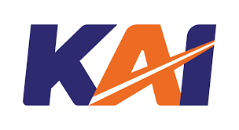

PT Kereta Api Indonesia (Persero) (abbreviated as KAI or PT KAI) is an Indonesian State-Owned Enterprise that organises railway transport services. PT KAI's services include passenger and freight transport. At the end of March 2007, the House of Representatives passed Law No. 13 of 1992, Law No. 23 of 2007, which confirmed that private investors as well as local governments are given the opportunity to manage railway transport services in Indonesia. Thus, the enactment of the law legally ended PT KAI's monopoly in operating trains in Indonesia.
Being the best transport ecosystem solution for Indonesia.
Inspired by the shape of the TRAIN REL which is depicted with a line connecting upwards to the letter A, KAI is expected to continue to advance and become the best transportation ecosystem solution that is integrated, trusted, synergised, and can one day connect Indonesia from Sabang to Merauke. Indonesia from Sabang to Merauke.
Using a dynamic and modified italic typeface on the letter A illustrates KAI's character of being progressive, open-minded, and trustworthy.
The bold yet friendly graphics with different colours in the letters are expected to reflect the harmonious and competent relationship between KAI and all stakeholders.
The combination of dark blue, which supports stability, professionalism, trustworthiness and confidence, is accented with orange, which shows enthusiasm, creativity, determination, success and happiness.

Upholding the trust given.
Continue to learn and develop capabilities.
Care for each other and respect differences.
Dedicated and prioritising the interests of the Nation and State.
Continue to innovate and be enthusiastic in driving or facing change.
Build synergistic partnerships.